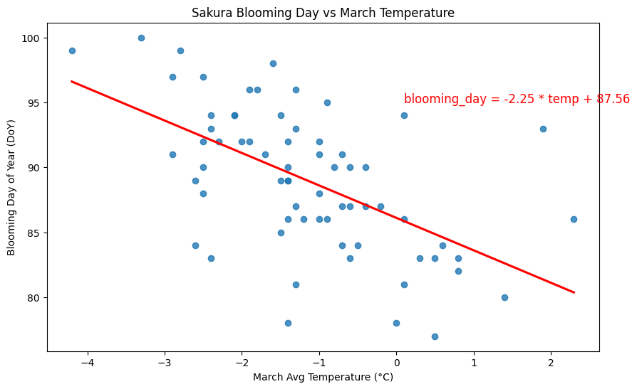
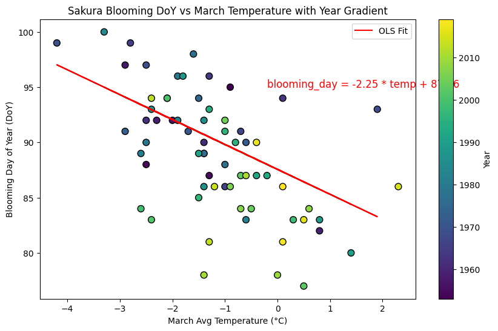
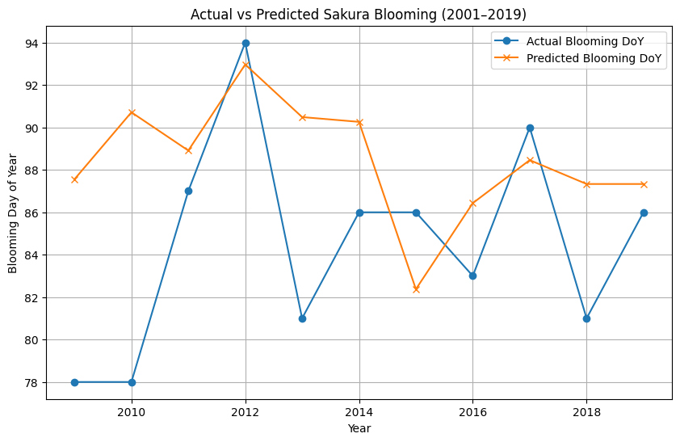
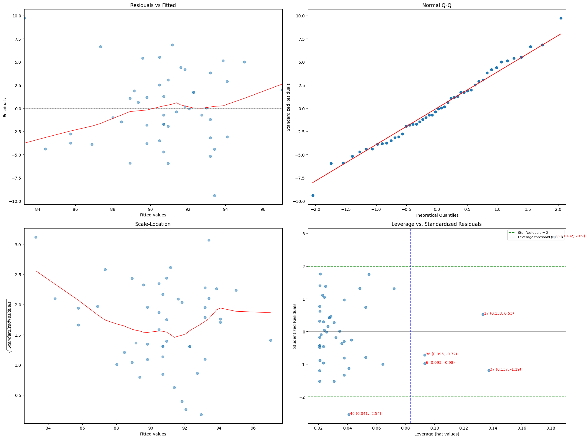
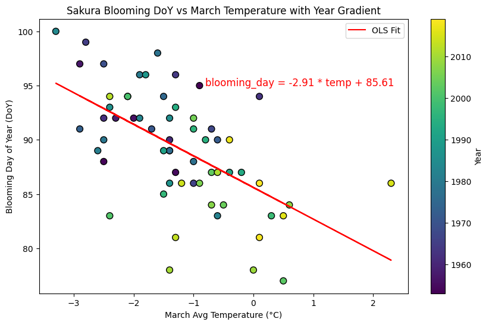
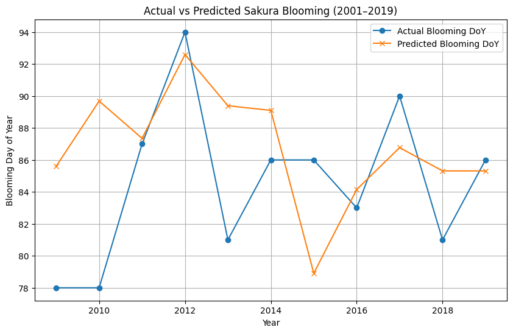

# ============= PREAMBLE =============
# Last Edited By: Luca Carnegie and Chris Lu
# Date: April 03, 2025
# Description: OLS Modelling Work for Modern Bloom Data
# ====================================
# Package setup
import pandas as pd
import matplotlib.pyplot as plt
import seaborn as sns
import statsmodels.api as sm
from statsmodels.graphics.gofplots import qqplot
from sklearn.metrics import mean_squared_error, mean_absolute_error, r2_score
import statsmodels.formula.api as smf
import numpy as np
import os
# Load dataset
df = pd.read_csv("../data/analysis_data/modern_bloom.csv")
# Rename columns for clarity
df.columns = ['year', 'flower_date', 'flower_doy', 'march_temp_c']
# Split into training (1953–2000) and testing (2010–2019)
train_df = df[df['year'] <= 2000]
test_df = df[(df['year'] >= 2009) & (df['year'] <= 2019)]
# Define X and y
X = sm.add_constant(train_df['march_temp_c']) # Add intercept
y = train_df['flower_doy']Modelling with Outlier
Modelling with Outlier
# Fit the OLS model
model_0 = sm.OLS(y, X).fit()
# Save Summary for Pickling
os.makedirs("model", exist_ok=True)
with open("../model/ols.pkl", "wb") as ols:
pickle.dump(model_0, ols)
# Output summary
print(model_0.summary()) OLS Regression Results
==============================================================================
Dep. Variable: flower_doy R-squared: 0.320
Model: OLS Adj. R-squared: 0.305
Method: Least Squares F-statistic: 21.65
Date: Thu, 03 Apr 2025 Prob (F-statistic): 2.79e-05
Time: 01:03:33 Log-Likelihood: -133.72
No. Observations: 48 AIC: 271.4
Df Residuals: 46 BIC: 275.2
Df Model: 1
Covariance Type: nonrobust
================================================================================
coef std err t P>|t| [0.025 0.975]
--------------------------------------------------------------------------------
const 87.5591 0.901 97.226 0.000 85.746 89.372
march_temp_c -2.2538 0.484 -4.653 0.000 -3.229 -1.279
==============================================================================
Omnibus: 0.242 Durbin-Watson: 1.739
Prob(Omnibus): 0.886 Jarque-Bera (JB): 0.361
Skew: 0.152 Prob(JB): 0.835
Kurtosis: 2.702 Cond. No. 3.44
==============================================================================
Notes:
[1] Standard Errors assume that the covariance matrix of the errors is correctly specified.## Modelling with Robust HC1 SE
# Fit OLS model with robust standard errors
model_1 = sm.OLS(y, X).fit(cov_type='HC1')
# Save Summary for Pickling
os.makedirs("model", exist_ok=True)
with open("../model/ols_robust.pkl", "wb") as ols_robust:
pickle.dump(model_1, ols_robust)
# Output the summary
print(model_1.summary()) OLS Regression Results
==============================================================================
Dep. Variable: flower_doy R-squared: 0.320
Model: OLS Adj. R-squared: 0.305
Method: Least Squares F-statistic: 11.83
Date: Thu, 03 Apr 2025 Prob (F-statistic): 0.00125
Time: 01:03:34 Log-Likelihood: -133.72
No. Observations: 48 AIC: 271.4
Df Residuals: 46 BIC: 275.2
Df Model: 1
Covariance Type: HC1
================================================================================
coef std err z P>|z| [0.025 0.975]
--------------------------------------------------------------------------------
const 87.5591 1.194 73.361 0.000 85.220 89.898
march_temp_c -2.2538 0.655 -3.440 0.001 -3.538 -0.970
==============================================================================
Omnibus: 0.242 Durbin-Watson: 1.739
Prob(Omnibus): 0.886 Jarque-Bera (JB): 0.361
Skew: 0.152 Prob(JB): 0.835
Kurtosis: 2.702 Cond. No. 3.44
==============================================================================
Notes:
[1] Standard Errors are heteroscedasticity robust (HC1)## Visualizations
# Scatterplot with regression line
plt.figure(figsize=(10, 6))
sns.regplot(x='march_temp_c', y='flower_doy', data=df, ci=None, line_kws={'color': 'red'})
plt.text(0.1, 95, f"blooming_day = {model_0.params[1]:.2f} * temp + {model_0.params[0]:.2f}", color="red", fontsize=12)
plt.title("Sakura Blooming Day vs March Temperature")
plt.xlabel("March Avg Temperature (°C)")
plt.ylabel("Blooming Day of Year (DoY)")
plt.show()
# Scatterplot with year-based color gradient
plt.figure(figsize=(10, 6))
scatter = plt.scatter(df['march_temp_c'], df['flower_doy'], c=df['year'], cmap='viridis', s=60, edgecolor='k')
plt.plot(X['march_temp_c'], model_0.predict(X), color='red', label='OLS Fit')
plt.text(-0.2, 95, f"blooming_day = {model_0.params[1]:.2f} * temp + {model_0.params[0]:.2f}", color="red", fontsize=12)
plt.colorbar(scatter, label='Year')
plt.title("Sakura Blooming DoY vs March Temperature with Year Gradient")
plt.xlabel("March Avg Temperature (°C)")
plt.ylabel("Blooming Day of Year (DoY)")
plt.legend()
plt.show()C:\Users\Chris Lu\AppData\Local\Temp\ipykernel_142868\3426368552.py:5: FutureWarning: Series.__getitem__ treating keys as positions is deprecated. In a future version, integer keys will always be treated as labels (consistent with DataFrame behavior). To access a value by position, use `ser.iloc[pos]`
plt.text(0.1, 95, f"blooming_day = {model_0.params[1]:.2f} * temp + {model_0.params[0]:.2f}", color="red", fontsize=12)
C:\Users\Chris Lu\AppData\Local\Temp\ipykernel_142868\3426368552.py:15: FutureWarning: Series.__getitem__ treating keys as positions is deprecated. In a future version, integer keys will always be treated as labels (consistent with DataFrame behavior). To access a value by position, use `ser.iloc[pos]`
plt.text(-0.2, 95, f"blooming_day = {model_0.params[1]:.2f} * temp + {model_0.params[0]:.2f}", color="red", fontsize=12)

Test Model
##Modelling Training Dataset
# Test OLS model (nonrobust)
model_test = model_0
# Prepare test data
X_test = sm.add_constant(test_df['march_temp_c'])
y_test = test_df['flower_doy']
# Predict on test data
y_pred = model_test.predict(X_test)
# Evaluation metrics
rmse = np.sqrt(mean_squared_error(y_test, y_pred))
mae = mean_absolute_error(y_test, y_pred)
r2 = r2_score(y_test, y_pred)
print("Evaluation on Test Set (2001–2019):")
print(f"RMSE: {rmse:.2f}")
print(f"MAE: {mae:.2f}")
print(f"R²: {r2:.3f}")
# Plot actual vs predicted
plt.figure(figsize=(10, 6))
plt.plot(test_df['year'], y_test, label='Actual Blooming DoY', marker='o')
plt.plot(test_df['year'], y_pred, label='Predicted Blooming DoY', marker='x')
plt.xlabel("Year")
plt.ylabel("Blooming Day of Year")
plt.title("Actual vs Predicted Sakura Blooming (2001–2019)")
plt.legend()
plt.grid(True)
plt.show()Evaluation on Test Set (2001–2019):
RMSE: 6.29
MAE: 5.02
R²: -0.778
# Create diagnostic plots for the OLS model
fig = plt.figure(figsize=(20, 15))
# Residual vs Fitted Plot
ax1 = fig.add_subplot(2, 2, 1)
residuals = model_0.resid
fitted = model_0.fittedvalues
sns.residplot(x=fitted, y=residuals, lowess=True, scatter_kws={'alpha': 0.5}, line_kws={'color': 'red', 'lw': 1}, ax=ax1)
ax1.set_title('Residuals vs Fitted')
ax1.set_xlabel('Fitted values')
ax1.set_ylabel('Residuals')
ax1.axhline(y=0, color='k', linestyle='-', alpha=0.3)
# QQ Plot for Normality
ax2 = fig.add_subplot(2, 2, 2)
qqplot(model_0.resid, line='s', ax=ax2)
ax2.set_title('Normal Q-Q')
ax2.set_xlabel('Theoretical Quantiles')
ax2.set_ylabel('Standardized Residuals')
# Scale-Location Plot (Square root of absolute residuals vs fitted)
ax3 = fig.add_subplot(2, 2, 3)
sqrt_abs_resid = np.sqrt(np.abs(residuals))
sns.regplot(x=fitted, y=sqrt_abs_resid, lowess=True, scatter_kws={'alpha': 0.5}, line_kws={'color': 'red', 'lw': 1}, ax=ax3)
ax3.set_title('Scale-Location')
ax3.set_xlabel('Fitted values')
ax3.set_ylabel('$\\sqrt{|Standardized Residuals|}$')
plt.tight_layout()
# Leverage vs. Standardized Residuals
ax4 = fig.add_subplot(2, 2, 4)
infl = model_0.get_influence()
hatvals = infl.hat_matrix_diag
stud_resid = infl.resid_studentized_external
# Determine leverage threshold
p = len(model_0.params) # number of parameters
leverage_threshold = 2 * p / len(hatvals)
# Plot points
ax4.scatter(hatvals, stud_resid, alpha=0.6)
ax4.axhline(y=0, color='k', linestyle='-', alpha=0.3)
# Add reference lines
ax4.axhline(y=2, color='g', linestyle='--', label='Std. Residuals = 2')
ax4.axhline(y=-2, color='g', linestyle='--')
ax4.axvline(x=leverage_threshold, color='b', linestyle='--',
label=f'Leverage threshold ({leverage_threshold:.3f})')
# Highlight and label influential points (leverage > threshold or std. residuals > 2)
influential_points = []
for i in range(len(hatvals)):
if (abs(stud_resid[i]) > 2) or (hatvals[i] > leverage_threshold):
ax4.text(hatvals[i], stud_resid[i],
f" {i} ({hatvals[i]:.3f}, {stud_resid[i]:.2f})",
fontsize=9, color="red")
influential_points.append(i)
ax4.set_title('Leverage vs. Standardized Residuals')
ax4.set_xlabel('Leverage (hat values)')
ax4.set_ylabel('Studentized Residuals')
ax4.legend(loc='upper right', fontsize=8)
plt.tight_layout()
plt.show()
Modelling without Outliers
# Create a clean dataset without influential points
df_clean = df.drop(influential_points)
# Refit model with clean data
X_clean = sm.add_constant(df_clean['march_temp_c'])
y_clean = df_clean['flower_doy']
model_clean = sm.OLS(y_clean, X_clean).fit()
model_clean_robust = sm.OLS(y_clean, X_clean).fit(cov_type='HC1')# Print comparison
print("\nOriginal model:")
print(f"Intercept: {model_0.params[0]:.4f}, Slope: {model_0.params[1]:.4f}, R²: {model_0.rsquared:.4f}")
print("\nCleaned model (without influential points):")
print(f"Intercept: {model_clean.params[0]:.4f}, Slope: {model_clean.params[1]:.4f}, R²: {model_clean.rsquared:.4f}")
Original model:
Intercept: 87.5591, Slope: -2.2538, R²: 0.3200
Cleaned model (without influential points):
Intercept: 85.6057, Slope: -2.9124, R²: 0.3388C:\Users\Chris Lu\AppData\Local\Temp\ipykernel_142868\3890104478.py:3: FutureWarning: Series.__getitem__ treating keys as positions is deprecated. In a future version, integer keys will always be treated as labels (consistent with DataFrame behavior). To access a value by position, use `ser.iloc[pos]`
print(f"Intercept: {model_0.params[0]:.4f}, Slope: {model_0.params[1]:.4f}, R²: {model_0.rsquared:.4f}")
C:\Users\Chris Lu\AppData\Local\Temp\ipykernel_142868\3890104478.py:5: FutureWarning: Series.__getitem__ treating keys as positions is deprecated. In a future version, integer keys will always be treated as labels (consistent with DataFrame behavior). To access a value by position, use `ser.iloc[pos]`
print(f"Intercept: {model_clean.params[0]:.4f}, Slope: {model_clean.params[1]:.4f}, R²: {model_clean.rsquared:.4f}")print(model_clean.summary()) OLS Regression Results
==============================================================================
Dep. Variable: flower_doy R-squared: 0.339
Model: OLS Adj. R-squared: 0.328
Method: Least Squares F-statistic: 30.23
Date: Thu, 03 Apr 2025 Prob (F-statistic): 8.65e-07
Time: 01:03:40 Log-Likelihood: -174.83
No. Observations: 61 AIC: 353.7
Df Residuals: 59 BIC: 357.9
Df Model: 1
Covariance Type: nonrobust
================================================================================
coef std err t P>|t| [0.025 0.975]
--------------------------------------------------------------------------------
const 85.6057 0.861 99.470 0.000 83.884 87.328
march_temp_c -2.9124 0.530 -5.498 0.000 -3.972 -1.852
==============================================================================
Omnibus: 1.647 Durbin-Watson: 1.779
Prob(Omnibus): 0.439 Jarque-Bera (JB): 1.232
Skew: -0.347 Prob(JB): 0.540
Kurtosis: 3.051 Cond. No. 3.17
==============================================================================
Notes:
[1] Standard Errors assume that the covariance matrix of the errors is correctly specified.print(model_clean_robust.summary()) OLS Regression Results
==============================================================================
Dep. Variable: flower_doy R-squared: 0.339
Model: OLS Adj. R-squared: 0.328
Method: Least Squares F-statistic: 22.88
Date: Thu, 03 Apr 2025 Prob (F-statistic): 1.19e-05
Time: 01:03:40 Log-Likelihood: -174.83
No. Observations: 61 AIC: 353.7
Df Residuals: 59 BIC: 357.9
Df Model: 1
Covariance Type: HC1
================================================================================
coef std err z P>|z| [0.025 0.975]
--------------------------------------------------------------------------------
const 85.6057 0.980 87.318 0.000 83.684 87.527
march_temp_c -2.9124 0.609 -4.783 0.000 -4.106 -1.719
==============================================================================
Omnibus: 1.647 Durbin-Watson: 1.779
Prob(Omnibus): 0.439 Jarque-Bera (JB): 1.232
Skew: -0.347 Prob(JB): 0.540
Kurtosis: 3.051 Cond. No. 3.17
==============================================================================
Notes:
[1] Standard Errors are heteroscedasticity robust (HC1)# Scatterplot with year-based color gradient
plt.figure(figsize=(10, 6))
scatter = plt.scatter(df_clean['march_temp_c'], df_clean['flower_doy'], c=df_clean['year'], cmap='viridis', s=60, edgecolor='k')
plt.plot(df_clean['march_temp_c'], model_clean.predict(X_clean), color='red', label='OLS Fit')
plt.text(-0.8, 95, f"blooming_day = {model_clean.params[1]:.2f} * temp + {model_clean.params[0]:.2f}", color="red", fontsize=12)
plt.colorbar(scatter, label='Year')
plt.title("Sakura Blooming DoY vs March Temperature with Year Gradient")
plt.xlabel("March Avg Temperature (°C)")
plt.ylabel("Blooming Day of Year (DoY)")
plt.legend()
plt.show()C:\Users\Chris Lu\AppData\Local\Temp\ipykernel_142868\3504803602.py:5: FutureWarning: Series.__getitem__ treating keys as positions is deprecated. In a future version, integer keys will always be treated as labels (consistent with DataFrame behavior). To access a value by position, use `ser.iloc[pos]`
plt.text(-0.8, 95, f"blooming_day = {model_clean.params[1]:.2f} * temp + {model_clean.params[0]:.2f}", color="red", fontsize=12)
Test Model
##Modelling Training Dataset
# Test OLS model (nonrobust)
model_test = model_clean
# Prepare test data
X_test = sm.add_constant(test_df['march_temp_c'])
y_test = test_df['flower_doy']
# Predict on test data
y_pred = model_test.predict(X_test)
# Evaluation metrics
rmse = np.sqrt(mean_squared_error(y_test, y_pred))
mae = mean_absolute_error(y_test, y_pred)
r2 = r2_score(y_test, y_pred)
print("Evaluation on Test Set (2001–2019):")
print(f"RMSE: {rmse:.2f}")
print(f"MAE: {mae:.2f}")
print(f"R²: {r2:.3f}")
# Plot actual vs predicted
plt.figure(figsize=(10, 6))
plt.plot(test_df['year'], y_test, label='Actual Blooming DoY', marker='o')
plt.plot(test_df['year'], y_pred, label='Predicted Blooming DoY', marker='x')
plt.xlabel("Year")
plt.ylabel("Blooming Day of Year")
plt.title("Actual vs Predicted Sakura Blooming (2001–2019)")
plt.legend()
plt.grid(True)
plt.show()Evaluation on Test Set (2001–2019):
RMSE: 5.70
MAE: 4.46
R²: -0.461